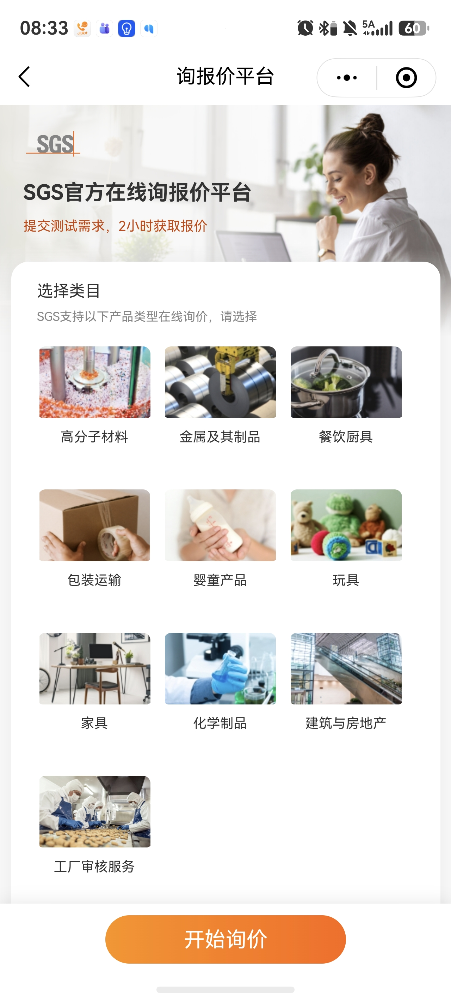
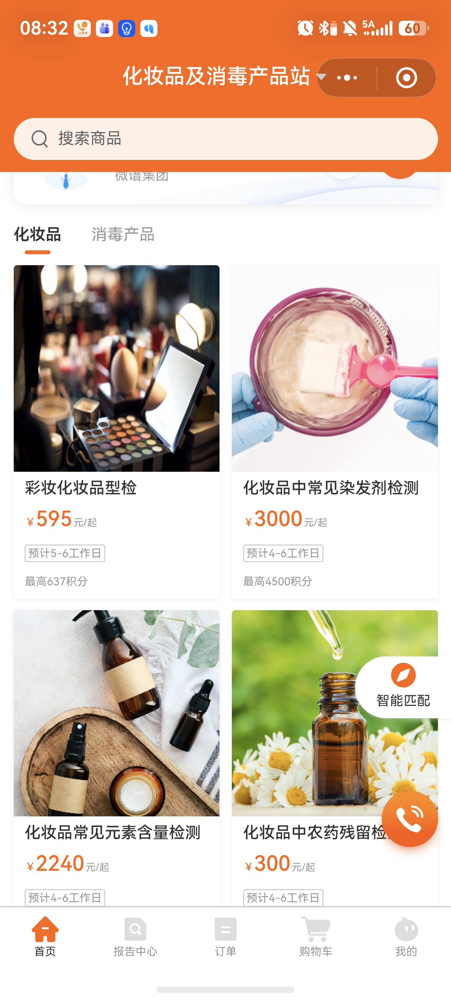

China E-commerce · Lab Testing
WeChat self-serve booking for China e-commerce sellers
$904K revenue YTD, +249% order growth — every booking still processed manually by a SIC acting as a human relay. The relay cannot scale. A WeChat mini-program removes it.
Decision needed
Spike · Build · Redirect
We need your direction on which path to take, and alignment on whether the China market is a strategic priority for QIMA right now.
01Paths forward
Option A
Spike first
2–3 week technical spike to validate AI photo recognition accuracy and seller account binding before committing to full build. Lower upfront risk — but leaves the relay running longer.
Option B
Build now — Q3 launch
Simple form as baseline; AI as enhancement layer. SIC account binding resolved in build. Pilot with high-frequency TEMU sellers. Survey and competitive pressure support moving directly to build.
Option C
Adjust direction
Deprioritise China e-commerce tooling if the China market is not a current strategic priority. Redirect SIC capacity differently. Revisit when market strategy is confirmed.
⚠WeChat is an ecosystem — and competitors are already inside it
WeChat monthly active users
1.4B
QIMA China customers on WeCom
17,864
Competitors with live WeChat ordering
2 already
Why WeChat — three reasons that matter for this project
01
Where sellers already work
China e-commerce sellers run their entire business in WeChat — customer service, supplier coordination, logistics, payments. A mini-program lives inside WeChat: zero context switch, frictionless adoption. A browser link requires them to leave.
02
Official account = owned broadcast channel
The mini-program drives follows to QIMA's official WeChat account — currently massively underutilised vs. our WeCom reach. Once followed, QIMA can push order updates, service news, and marketing directly into the seller's feed.
03
Sharing is viral by design
Sellers share mini-program cards directly into group chats — any seller in the group opens it in one tap. This is how adoption scales organically in China. No email or link can do this. The channel is self-distributing.
Competitor screenshots — both live today
SGS — Official Online Inquiry & Quotation Platform
WeChat mini-program · "Submit a test request, get a quote in 2 hours" · Covers: plastics, metals, cookware, packaging, toys, baby products, furniture, chemicals, real estate, factory audit

📱
Save screenshot as
comp-sgs.png
in this folder
Weipu (Microspectrum) — Full E-commerce Ordering Platform
WeChat mini-program · Prices listed (¥595–¥3,000+) · Shopping cart, order history, report download, AI smart matching · Covers: cosmetics, disinfectants + expanding

📱
Save screenshot as
comp-weipu.png
in this folder
Both competitors are past prototype stage — these are live, polished products in our customers' hands. QIMA is not competing against a concept. Every quarter we delay is market share ceded.
Strategic alignment needed
Is the China market a strategic priority for QIMA?
This is a product decision nested inside a strategy decision. Building a WeChat mini-program signals that QIMA is committing to serve China e-commerce sellers as a distinct segment — with dedicated tooling, not just Sales effort.
Is China e-commerce a strategic growth segment?
$904K YTD, +249% order growth — is this a segment QIMA actively wants to invest in, or a tail we're servicing reactively?
Should we build dedicated China tooling?
A WeChat mini-program is China-specific. It won't serve global clients. Does that conflict with a platform-first approach?
Act now or accept the competitive gap?
SGS and Weipu are already live. If QIMA doesn't move in H2 2026, we cede this channel. Is that acceptable?
02Business case
Total LT YTD 2026 (all channels): 76,799 orders · $26,974K revenue — China e-commerce (TEMU + Amazon) = 5.2% of orders and 3.4% of total LT revenue, growing at +249% YoY order volume
E-commerce LT Revenue · YTD
$904K
E-commerce orders · YTD
3,993
Relay cost — scales with volume
SIC time consumed/day8 hrs
Cost / year (today)$16.7K
Cost / year (2× volume)~$33K+
How the $600K upside is calculated
Each SIC generates ~$600K revenue/year. The relay consumes ~0.5 hr/day per SIC — equivalent to ~1 full FTE across 16 people. Freeing that capacity redirects SIC time from data entry to new client acquisition. 1 FTE equivalent × $600K = ~$600K incremental revenue potential.
03The problem — friction starts before the first order
Current state
- 🖥️SIC directs seller to QIMA.com to register — desktop form, painful on mobile
- ⏳SIC manually qualifies customer before account activates — seller waits
- 🆘Seller tries to order and asks SIC step-by-step how to use myQIMA — SIC becomes help desk
- ⌨️Or: seller sends info and SIC re-keys it into myQIMA — SIC becomes data entry
- 🕐1–3+ days from intent to confirmed booking
Future state — mini-program
- 📲SIC shares mini-program card in WeCom group — seller opens in one tap, stays in WeChat
- 🔑Existing myQIMA account → one-tap WeChat auth, go straight to booking
- 📝New seller → registers inside mini-program (not QIMA.com). For WeChat registrations, qualification can be skipped — eliminating the wait before first booking.
- 📷Upload product photo → AI fills category, name, tracking number
- ⚡Order flows automatically into AIMS — same-day, zero SIC relay
Why not myQIMA? Desktop-first, complex form. Sellers work on mobile in WeChat. Forcing a browser switch kills adoption. Survey: 0% are fully unwilling to self-serve — they're blocked by complexity, not intent.
Why not AIMS? Moves the relay, doesn't remove it. Sellers still send fragmented info on WeChat — someone still has to collect, chase fields, and match accounts.
04Seller evidence
Survey · 25 valid responses · QIMA lab customers · July 7 2026 · directional signal, consistent across categories and frequency segments.
Finding 01
0%
Fully unwilling to self-serve
48% rely on SIC today — but the barrier is fear of errors (88%) and unclear classification (72%), not lack of interest. Demand exists; the tool doesn't.
Finding 02
40% → 52%
AI directly drives adoption
Without AI: 40% willing, ~50% wait-and-see. With AI photo recognition: 52% willing, wait-and-see drops to 32%. AI addresses both stated blockers head-on.
Finding 03
92%
Progress tracking is non-negotiable
92% want order status; 80% want report download. 100% want at least one. Must-haves on day one. Start with toys — 60% of submissions.
Speed gap: 52% of relay orders wait 1–3+ days. Self-service users complete same-day 85.7% of the time — speed alone is a strong adoption argument.
Best seed users: High-frequency sellers: 54.6% willing. Same-day completers: 71.4% willing. Target these first at launch.
05Success metrics
Business Outcome
Self-serve cohort orders more
Product Outcome · Adoption
≥50%
Product Outcome · Speed
1–2 days
06What we need from this meeting
| Decision | Context | Owner |
|---|
| Spike, Build, or Redirect? |
Option A reduces risk but delays. Option B moves fast — survey and competitive data support it. Option C if China strategy is not confirmed. |
Alexis |
| Is China e-commerce a strategic priority? |
A WeChat mini-program is a China-specific investment. Needs leadership alignment on whether this segment warrants dedicated product tooling in 2026. |
Alexis + leadership |